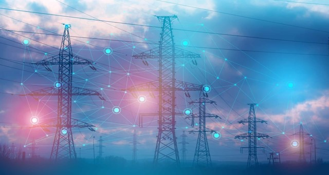
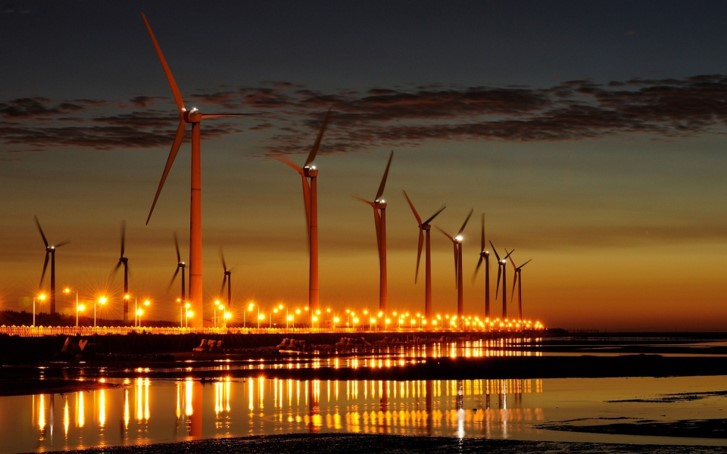

— область хозяйственно-экономической деятельности человека,совокупность больших естественных и искусственных подсистем, служащих для преобразования, распределения и использования энергетических ресурсов всех видов. Её целью является обеспечение производства энергии путём преобразования первичной, природной энергии во вторичную, например в электрическую или тепловую энергию.
 Альтернативные источники энергии — это возобновляемые энергетические ресурсы, которые получают благодаря использованию гидроэнергии,энергии ветра, солнечной энергии, геотермальной энергии, биомассы и энергии приливов и отливов. В отличие от ископаемых видов топлива — например, нефти, природного газа, угля и урановой руды, эти источники энергии не истощаются, поэтому их называют возобновляемыми.